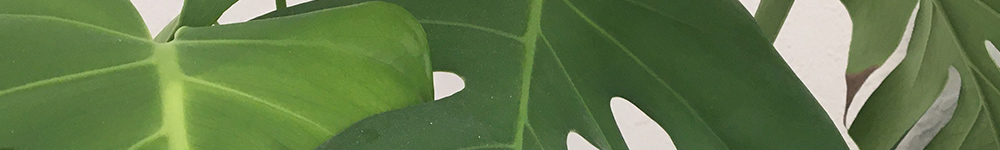

New to Houseplants?
Everyone has been a beginner plant parent at some point. This is a judgement free zone to learn, ask questions, and make mistakes. Whether your dream is to turn your space into a jungle or if you are just looking to start small with a plant or two, we have you covered.

Step 1: Acquire plant
Instagram might have convinced you. Or you saw it in the store and through it looked nice. Whatever the reason, you now have a plant in your possession.
Step 2: Uh-oh
You realize that you've never had plants, or that you have killed them in the past and are determined not to this time.
Step 3: Start Researching
Taking charge, you start googling to find what type of plant you bought, where it should go, how to care for it. Lucky for you, you found this site!